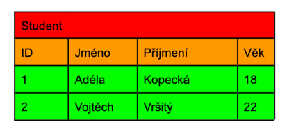
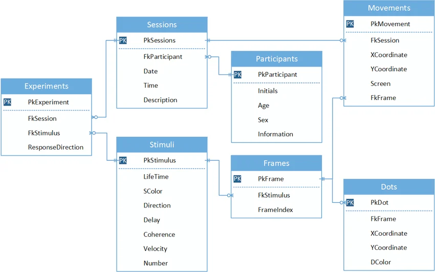

Modelovani-relacni-databaze
Otázky
4 základní pojmy
logické a relační schéma - řešení vazeb a pro koho jsou určeny
definice vztahů - kardinalita, parcialita
Základní pojmy
Entita
tabulka --> třída objektů stejného typu (Student)
Atribut
vlastnost entity, která popisuje entitu - obsahuje metadata (ID, Jméno, Příjmení ,Věk)
Instance
záznam, konkrétní objekt dané enity - obsahuje data (1, Adéla, Kopecká, 18)

Relace - vazby
popisuje vztah s entitou pomocí kardinality a parciality
Kardinalita
četnost vztahu
1 : 1 -|--|-
1 : N -|--<-
M : N ->--<-
Parcialita
povinost ve vztahu
může - O
musí - I
Stupně ve vztahu
kolik entit je ve vztahu
stupeň 1 : ... 1 entita je ve vztahu sama se sebou (self-reference)
stupeň 2 : ... 2 entity ve vazbě
stupeň 3 : ... 3 a více entit ve vazbě
Schéma
Logické
obsahuje entity a vazby vyznačuje se pomocí schématických značek (můžou zde být atributy, ale ne klíče)
je určeno pro klienta, jako návrh
TODO - schéma
Relační
obsahuje tabulky a atributy
vazby jsou vyznačeny pomocí klíčů --> FK a PK
určeno pro developera

Sum-up
Pojmy :
Entita - tabulka --> třída objektů
Atribut - vlastnost entity, která ji popisuje
Instance - záznam, konkrétní objekt dané enity
Kardinalita - četnost ve vztahu
Parcialita - povinnost ve vztahu
Relace
popisuje vztah mezi entitami
1 : 1
1 : N
M : N
Schéma
Logické
entity a vazby
pro klienta
Relační
tabulky a atributy
pro devs